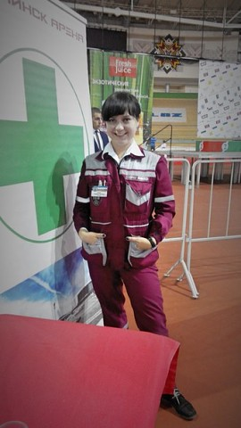

Я очень довольна занятиями! Алла Михайловна – человек, который найдёт подход к любому ученику, заставит работать память и логику, найдёт все пробелы и поможет их заполнить. От занятий совсем не устаёшь: информация воспринимается и усваивается очень легко, ведь объясняется доступно и интересно. На каждое занятие идёшь с удовольствием, а не с мыслями вроде "опять зубрить…", что очень важно.
Ирина Таланова, учащаяся 11Б класса гимназии №30

Людмила Пашук, Кардиореаниматолог скорой медицинской помощи
Учителей много, но лучший тот, которого будешь помнить всю жизнь.
Алла Михайловна- преподаватель патологической анатомии.
Высокий профессионализм, отличное знание предмета, аналитический ум, педагогический такт -
это лишь немногие качества, за которые любят и уважают Аллу Михайловну все студенты.
Это человек, который помог нам определить цену знаниям и умениям, передала свои принципы и идеалы,
свой вкус. Такие вещи могут быть восприняты от человека, которого уважаешь, за которым готов тянуться,
до которого расти и расти, чья похвала для тебя - высшая награда.

Мария Семашко, студентка ГрГМУ
Занятия с Аллой Михайловной помогли мне систематизировать знания,
что, безусловно, важно перед тестированием.
Нетрадиционный подход к занятиям и умение Аллы Михайловны заинтересовать,
мотивировали меня расширять свои знания в области биологии,
что помогает мне и сегодня в медицинском университете.

Валерия Тышкевич, студентка МГЭУ им. А.Д.Сахарова
Очень благодарна, что Вы научили меня не только зубрить,
но и понимать, представлять весь материал. Приходила на уроки с удовольствием. Всем советую!

Ирина Сидоревич, сотрудник РНПЦ ОМР им. Н.Н. Александрова
Алла Михайловна помогает не только структурировать знания, но и фундаментально всё понимать,
отчего становится интересно и легко. Это профессионал, достойный уважения и восхищения.

Людмила Кайдаш, студентка 5 курса БГМУ
Занятия с Аллой Михайловной проходили в спокойной дружеской атмосфере,
сложный объёмный материал преподавался легко, без лишних слов, без напряжения.
Полученные знания и навыки по анатомии и физиологии мне очень помогают в университете. Спасибо!